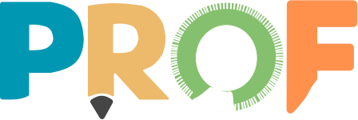

-> quem somos
Uma startup em busca da evolução educacional.
-> missão, visão e valores
Transparência, inovação, produtividade e evolução.
1. Inovação: Buscamos constantemente novas maneiras de melhorar e reinventar a educação, abraçando a criatividade e a experimentação.
2. Excelência: Comprometemo-nos com os mais altos padrões de qualidade e eficácia em tudo o que fazemos, buscando sempre superar as expectativas.
3. Empatia: Valorizamos a diversidade e entendemos as necessidades únicas de cada aluno e educador, buscando sempre fornecer soluções que atendam a essas necessidades de forma sensível e compassiva.
4. Transparência: Priorizamos a honestidade, a integridade e a transparência em todas as nossas interações e operações.
Valores
A missão da Transforma é oferecer soluções educacionais que facilitem a aprendizagem e a docência, promovam a excelência acadêmica e capacitem indivíduos a se tornarem agentes de mudança em suas comunidades. A empresa está comprometida em criar um impacto positivo duradouro no campo da educação, capacitando as gerações presentes e futuras para contribuir para um mundo mais positivo.
Missão
Transforma enxerga um futuro onde a educação seja produtiva e automatizada a todos. Nossa visão é revolucionar o setor educacional, capacitando alunos e educadores por meio de soluções inovadoras e tecnológicas que se adaptem às necessidades em constante evolução da sociedade.
Visão
-> projeto
Conheça a
por mais eficiência, produtividade e otimização no dia a dia dos educadores.
Com dúvidas ou interessado no projeto?
Conte com nossa equipe para esclarecer todas as suas dúvidas e ajudá-lo no que for preciso.